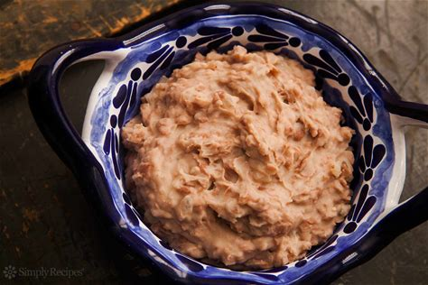

Refried Beans

Description
A side of refried beans!
Which always go awesome with some beef enchiladas and rice
Ingredients
- 2 1/2 cups dry pinto beans
- Water
- 2 tsp Salt
- 2 tsp dried Oregano
- 1 onion, halved
- 2 tbsp bacon fat or extra virgin olive oil
- 1/2 cup bean cooking liquid or water
- 1/2 tsp chipolte powder, optional
- Crumbled cotija cheese or grated cheddar cheese, optional
Steps
- Rinse the dry beans
- Cook the beans on the stove top or pressure cooker
- Add half on onion to beans
- Add salt to beans
- Add oregano to beans
- Sautee the onions in fat
- Add the beans, mash them in the pan
- Add water and seasoning